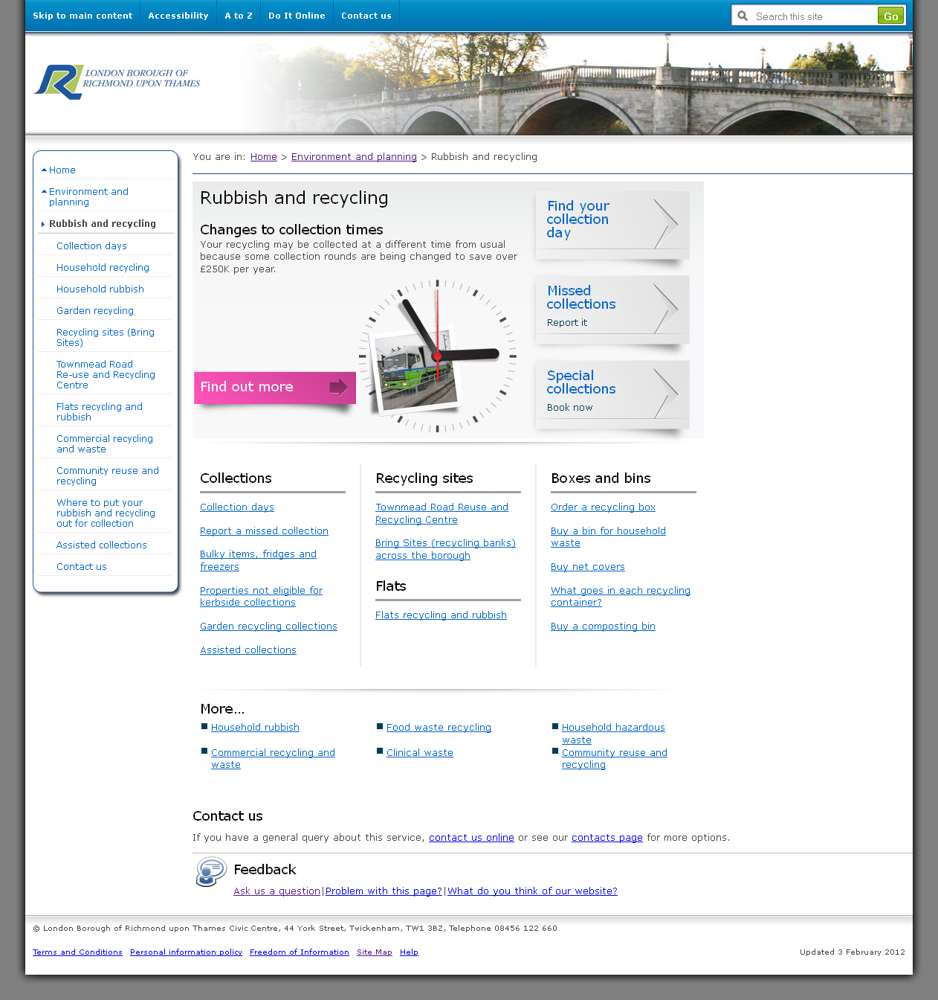
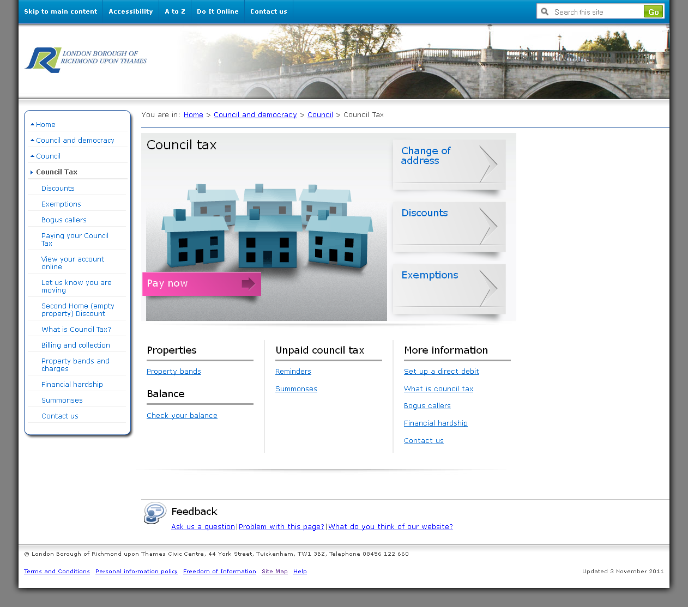
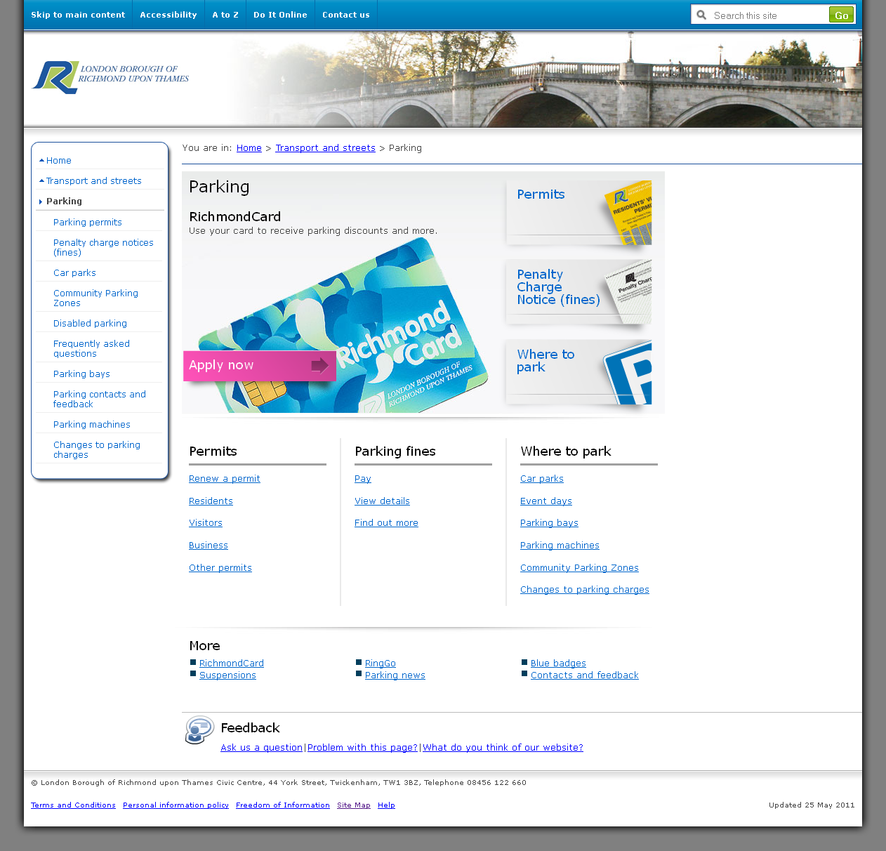
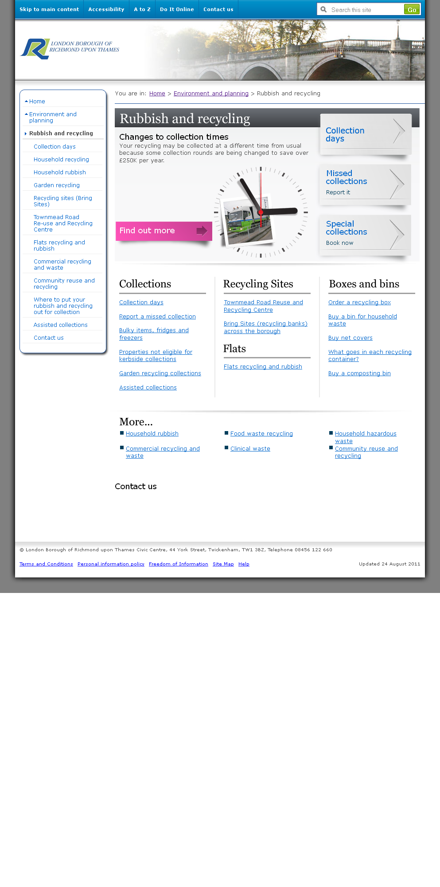

A postcode lookup for bin collection days answered a common question directly. Customer Services reported dozens fewer calls a week about that task.

Case study 01
When the website sent people to the phone
A council website redesign told through the evidence, working files and decisions that moved services closer to residents’ tasks.
Original council page captured in the project archive, 2012
The starting point
Residents needed answers. Customer Services got the calls.
People came to the council site for ordinary tasks: finding their bin collection day, dealing with council tax, sorting out parking. When they could not finish online, they phoned or came to the Civic Centre. The brief covered the website and the pressure on the front line.
The Double Diamond
From scattered signals to a shared decision.
The four phases are a way to follow the work. The artefacts below show what was available, what I made visible and what the team decided next.
01 / Discover
Look where the demand was landing.
I spoke with residents, Customer Services and service owners, and used surveys and moderated usability sessions, including sessions with blind residents and people using assistive technology. I compared common call reasons with the pages that should have answered them.
Collection days, council tax and parking appeared in both the contact evidence and the website problem areas. The next question became where those online journeys broke down.
Pages from the project archive
Original captured pages

These are retained captures in the Richmond design archive. They show the page environment being examined, not usability results on their own.
Who needed to be in the conversation?
Reconstructed conversation plan. The original research template and any RACI have not been recovered.
| Question to resolve | People or team | Evidence to bring together |
|---|---|---|
| What are residents trying to finish? | Residents, including assistive technology users | Interviews, surveys and observed tasks |
| Where do journeys fall back to contact? | Customer Services | Common call reasons and front desk experience |
| What makes the task work end to end? | Waste, council tax, parking and other service owners | Service rules, page content and hand-offs |
| Who can change the site and fund the work? | Web team and council leaders | Journey evidence and the case for change |
This is a present-day reconstruction from my account of the work. It illustrates the questions and teams, not a recovered historical document or a verified ownership matrix.
02 / Define
Make the cost visible to the people who could change it.
Customer Services could see the volume because they handled it every day. The link to the site was less visible to the people holding the budget. I brought the contact pattern and page problems together as a failure demand case.
The brief shifted from coping with calls to fixing the journeys that generated avoidable contact. That case secured the mandate to redesign.
The decision in one view
Reconstructed briefing logicSignal / frontline
Residents call or visit for tasks they expected to complete online.
Connection / digital
The same services recur in the call reasons and the difficult website journeys.
Decision / leadership
Invest in the journeys and services behind the site, then track whether contact falls.
This is a reconstruction of the argument described in my Richmond account. The original briefing and audited call figures have not been retained.
03 / Develop
Design around the task, across departments.
Each department had its own content and processes on a shared site. I mapped resident journeys across those boundaries, then worked on information architecture and content that made the task easier to recognise and complete.
Service ownership stayed with the departments. The digital route became more coherent from the resident’s side.
A surviving working visual
Original design archive
Read the page
Put the common routes within reach.
The working file gives collection days, missed collections and special collections prominent routes. It makes the resident’s likely next action easier to spot amid a broad service area.
- Collection days
- Report a missed collection
- Book a special collection
This file and the captured page are both archival material. Their exact sequence and release status are not verified, so they are shown as evidence of the work rather than a claimed before-and-after result.
04 / Deliver
A service people could use, and fewer reasons to call.
Supported iPads in the Civic Centre lobby helped residents who could not self-serve independently and gave staff a way to spot where journeys still failed.
The reported reduction is a Customer Services observation. An audited call-volume series and a verified SOCITM ranking change are not available for this account.